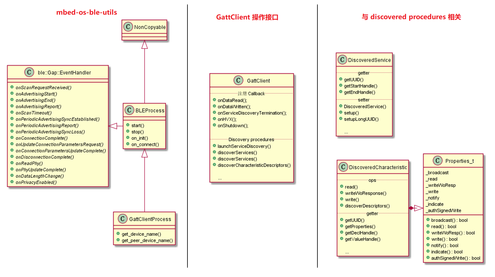

6. mbed os GattClient 介绍
这里列出了与 GATT Client 相关的一些类，以及需要使用的方法。
左侧是 mbed os 提供了 BLE 相关工具，用于快速构建应用程序，这个留到最后再说。
中间是 GattClient 类的一些操作接口，主要是注册回调函数，以及从 Server 端发现 Service，Characteristic 和 Characteristic Descriptor 的接口。
右侧是与发现过程相关的，这里 DiscoveredService 类是指发现过程中找到的 Service，DiscoveredCharacteristic 类是指发现过程中找到的 Characteristic 。

6.1. 本文目标
每一个类的 API 详细说明，请查看官方API手册，本文仅将这些 API 汇总出来，并简单分析其用途，最终学习 BLE_GattClient_CharacteristicWrite 这个例程是怎么使用这些 API 的。
6.2. GattClient 操作接口
GattClient 有很多方法，我上面罗列了一些常用方法，并分成了两组：
与注册回调函数相关
与发现服务过程相关
注册 Callback
接口如下：
void onDataRead(ble::ReadCallback_t callback);
void onDataWritten(ble::WriteCallback_t callback);
void onServiceDiscoveryTermination(ServiceDiscovery::TerminationCallback_t callback);
void onHVX(HVXCallback_t callback);
void onShutdown(const GattClientShutdownCallback_t &callback);
onDataRead：注册读 attribute 事件的回调函数。onDataWritten：注册写 attribute 事件的回调函数。onServiceDiscoveryTermination：注册服务发现结束事件的回调函数。onHVX：注册 Server 端 Characteristic Value 通知（Notification）或指示（Indication）事件的回调函数。onShutdown：注册连接关闭事件的回调函数。
注意：GattClient 里的读写操作的是某一个 attribute ，后面会看到 DiscoveredCharacteristic 里读写是操作 Characteristic Value 。
Discovery procedures
GATT Client 端可以发现 Service, Characteristic 和 Characteristic Descriptor 。GattClient 类与发现过程相关的 API 提供了这些功能。
// 根据给定 UUID 开启发现 Service 和 Characteristic 的过程。
ble_error_t launchServiceDiscovery (
ble::connection_handle_t connectionHandle,
ServiceDiscovery::ServiceCallback_t sc = nullptr,
ServiceDiscovery::CharacteristicCallback_t cc = nullptr,
const UUID &matchingServiceUUID = UUID::ShortUUIDBytes_t(BLE_UUID_UNKNOWN),
const UUID &matchingCharacteristicUUIDIn = UUID::ShortUUIDBytes_t(BLE_UUID_UNKNOWN)
);
// 根据给定 UUID 开启发现 Service 的过程。
ble_error_t discoverServices (
ble::connection_handle_t connectionHandle,
ServiceDiscovery::ServiceCallback_t callback,
const UUID &matchingServiceUUID = UUID::ShortUUIDBytes_t(BLE_UUID_UNKNOWN)
);
// 根据给定 [startHandle, endHandle] 发现 Service 的过程。
ble_error_t discoverServices (
ble::connection_handle_t connectionHandle,
ServiceDiscovery::ServiceCallback_t callback,
GattAttribute::Handle_t startHandle,
GattAttribute::Handle_t endHandle
);
// 根据给定 Characteristic 发现其 descriptor 的过程。
ble_error_t discoverCharacteristicDescriptors (
const DiscoveredCharacteristic &characteristic,
const CharacteristicDescriptorDiscovery::DiscoveryCallback_t &discoveryCallback,
const CharacteristicDescriptorDiscovery::TerminationCallback_t &terminationCallback
);
launchServiceDiscovery：
该函数用于发现 Service 和 Characteristic（只能由该 API 调用时发现），若在 Server 端发现了与 matchingServiceUUID 相匹配的 UUID ，那么就会回调函数 sc ；若在 Server 端发现了与 matchingCharacteristicUUIDIn 相匹配的 UUID ，那么就会回调函数 cc 。默认查找所有的 Service 和 Characteristic 。connectionHandle 是连接句柄，用于表示与 Server 端的连接 。
discoverServices：
该函数用于单独发现 Service ，可以用 matchingServiceUUID 来匹配 Server 端的 Service 。也可以查找 Attribute Handle 范围为 [startHandle, endHandle] 里的 Service 。若找到，则回调 callback 函数。 connectionHandle 是连接句柄，用于表示与 Server 端的连接 。
discoverCharacteristicDescriptors：
该函数用于发现 Characteristic Descriptors ，需要指明是哪一个 characteristic ，每发现一个 descriptor 就回调函数 discoveryCallback ，当所有的 descriptor 都查找完全后，回调函数 terminationCallback 。
6.3. discovery procedures 中的数据
该部分会介绍 DiscoveredService 和 DiscoveredCharacteristic 这两个类。
DiscoveredService
该类有 getter 和 setter 两类方法，Client 端主要用 getter 方法，因为相应的 Service 已经在 Server 端实现了。
可以通过 getUUID() 获取该 Service 的 UUID ，也可以通过 getStartHandle() 和 getEndHandle() 获得该 Service 在 attribute 表里的 attribute handle 范围。
DiscoveredCharacteristic
与 DiscoveredService 相比较，DiscoveredCharacteristic 拥有的方法更多，这很好理解，因为我们需要读写 Characteristic 的值。
其拥有一个 Properties_t 类，里面存储了该 Characteristic 的属性（读/写/通知…），并提供了相应的读属性方法。
read() 用于读取其 Value 值（需要该 Characteristic 拥有 read 属性），Server 返回读取的数据。
write() 用于写 Value 值（需要该 Characteristic 拥有 write 属性），Server 返回写成功或失败。
writeWoResponse() 用于写 Value 值（需要该 Characteristic 拥有 writeWoResponse 属性），Server 不返回任何消息。
discoverDescriptors() 用于发现其 descroptor 。
6.4. 使用 mbed-os-ble-utils 工具
如何使用
该工具在 mbed-os-ble-utils 目录下，简单使用该工具，我们就可以抽象出一层应用层，在应用层只用于完成业务代码即可。该工具封装了广播、扫描、连接的过程，我们只需关注服务发现过程，以及对 Characteristic 的读写操作过程。
client 使用了 ble_process.h 和 gatt_client_process.h 这两个文件。
该工具的简单使用如下：
int main()
{
BLE &ble = BLE::Instance();
events::EventQueue event_queue;
GattClientDemo demo;
/* this process will handle basic ble setup and advertising for us */
GattClientProcess ble_process(event_queue, ble);
/* once it's done it will let us continue with our demo */
ble_process.on_init(mbed::callback(&demo, &GattClientDemo::start));
ble_process.on_connect(mbed::callback(&demo, &GattClientDemo::start_discovery));
ble_process.start();
return 0;
}
创建 GattClientProcess 类的一个实例，然后使用 on_init() 注册回调函数，当 mbed os BLE 协议栈初始化完成后调用，一般用于初始化所需内容。之后使用 on_connect() 注册回调函数，当 BLE 协议栈建立连接后调用，这里用于开始发现服务的过程。之后调用 start() 方法启动 BLE 协议栈。
内部架构简析
ble::Gap::EventHandler 这个类定义了许多事件的回调函数，这些函数都是虚函数，如下所示：
struct EventHandler {
/**
* Called when an advertising device receive a scan response.
* @param event Scan request event.
* @version: 5+.
* @see AdvertisingParameters::setScanRequestNotification().
*/
virtual void onScanRequestReceived(const ScanRequestEvent &event)
{
}
......
}
当我们需要使用这些事件时，需要继承 ble::Gap::EventHandler 这个类，然后重写（override）相应的虚函数，所有的虚函数在文章最开始的图片里有。
BLEProcess 这个类用于处理设备位于广播态（Advertising）的相关内容。
GattClientProcess 这个类用于处理设备位于扫描态（Scanning）和发起态（Initiating）的相关内容。
而我们的应用程序则处理连接态（Connection）的相关内容。
有关 BLE 设备的广播态、扫描态、发起态和连接态可以参考爱洋葱的 BLE 系列博客 。
6.5. 例程分析+实验
以下简单分析 BLE_GattClient_CharacteristicWrite 这个官方例程。
首先看 main.c 函数
int main()
{
BLE &ble = BLE::Instance();
printf("\r\nGattClient demo of a writable characteristic\r\n");
GattClientDemo demo;
/* this process will handle basic setup and advertising for us */
GattClientProcess ble_process(event_queue, ble);
/* once it's done it will let us continue with our demo*/
ble_process.on_init(callback(&demo, &GattClientDemo::start));
ble_process.on_connect(callback(&demo, &GattClientDemo::start_discovery));
ble_process.start();
return 0;
}
这里借助了 ble 工具类 GattClientProcess ，注册了两个回调函数：
GattClientDemo::start()，BLE 协议栈初始化完成后调用。GattClientDemo::start_discovery()，BLE 协议栈建立连接后调用。
然后启动 BLE 协议栈。
BLE 协议栈初始化完成后会调用 GattClientDemo::start() 函数，在这里面注册了读 attribute 完成的回调函数 on_read() ，以及写 attribute 完成的回调函数 on_write() 。
/** Callback triggered when the ble initialization process has finished */
void start(BLE &ble, events::EventQueue &event_queue) {
ble.gattClient().onDataRead(on_read);
ble.gattClient().onDataWritten(on_write);
}
之后成功连接 Server ，GattClientDemo::start_discovery() 函数被调用，开始发现服务过程。
void start_discovery(BLE &ble, events::EventQueue &event_queue, const ble::ConnectionCompleteEvent &event) {
printf("We are looking for a service with UUID 0xA000\r\n");
printf("And a characteristic with UUID 0xA001\r\n");
ble.gattClient().onServiceDiscoveryTermination(discovery_termination);
ble.gattClient().launchServiceDiscovery(
event.getConnectionHandle(),
service_discovery,
characteristic_discovery,
EXAMPLE_SERVICE_UUID,
WRITABLE_CHARACTERISTIC_UUID
);
}
这里注册了发现服务过程结束的回调函数 discovery_termination() ，然后使用 launchServiceDiscovery 查找 Service (EXAMPLE_SERVICE_UUID – 0xA000) 和 Characteristic (WRITABLE_CHARACTERISTIC_UUID – 0xA001) 。当查找到 Service 时，回调函数 service_discovery() ；当查找到 Characteristic 时，回调函数 characteristic_discovery() 。
这三个回调函数很简单，就是简单打印信息，并且记录了找到的 Characteristic，因为待会要读写它的 Value 值。
static DiscoveredCharacteristic writable_characteristic;
static bool writable_characteristic_found = false;
void service_discovery(const DiscoveredService *service) {
if (service->getUUID().shortOrLong() == UUID::UUID_TYPE_SHORT) {
if (service->getUUID().getShortUUID() == EXAMPLE_SERVICE_UUID) {
printf("We found the service we were looking for\r\n");
}
}
}
void characteristic_discovery(const DiscoveredCharacteristic *characteristic) {
if (characteristic->getUUID().getShortUUID() == WRITABLE_CHARACTERISTIC_UUID) {
printf("We found the characteristic we were looking for\r\n");
writable_characteristic = *characteristic;
writable_characteristic_found = true;
}
}
void discovery_termination(ble::connection_handle_t connectionHandle) {
if (writable_characteristic_found) {
writable_characteristic_found = false;
event_queue.call([]{ writable_characteristic.read(); });
}
}
注意在发现服务过程结束的回调函数 discovery_termination()里 ，调用了这一行代码：
event_queue.call([]{ writable_characteristic.read(); });
因此下一步会执行事件队列里存储的 writable_characteristic.read(); 这个函数，读取数据完成后会触发 BLE 协议栈回调之前使用 onDataRead() 注册过的回调函数，即 on_read() 。
void on_read(const GattReadCallbackParams *response) {
if (response->handle == writable_characteristic.getValueHandle()) {
/* increment the value we just read */
uint8_t value = response->data[0];
value++;
/* and write it back */
writable_characteristic.write(1, &value);
printf("Written new value of %x\r\n", value);
}
}
这里简单将第一个字节的数据读取出来，并加 1，然后又使用 writable_characteristic.write() 将该数据写回 Server 端，Server 发生写完成响应包给 Client 后触发 BLE 协议栈回调之前使用 onDataWritten() 注册过的回调函数，即 on_write() 。
void on_write(const GattWriteCallbackParams *response) {
if (response->handle == writable_characteristic.getValueHandle()) {
event_queue.call_in(5000ms, []{ writable_characteristic.read(); });
}
}
这里只是加入了一个事件：5 秒后再次使用 writable_characteristic.read() 读取数据，循环往复，永不停止。
实现现象如下：
GattClient demo of a writable characteristic
Ble process started.
Ble instance initialized
Started scanning for "GattServer"
We found "GattServer", connecting...
Connected to: 84:2e:14:31:b6:38
We are looking for a service with UUID 0xA000
And a characteristic with UUID 0xA001
We found the service we were looking for
We found the characteristic we were looking for
Written new value of 2
Written new value of 3
Written new value of 4
Written new value of 5
Written new value of 6